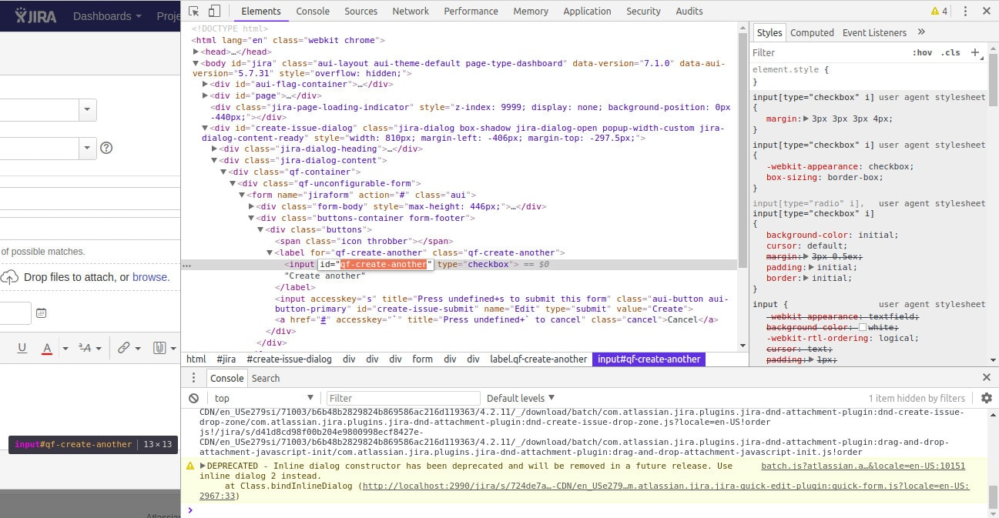
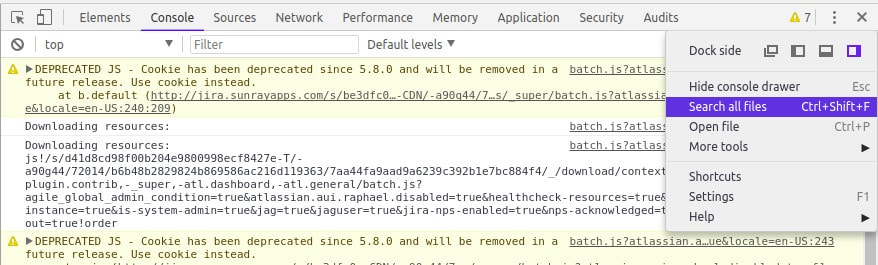

We already have chosen the place where we'd like to inject our customization. It's half of the success, and now we're going to find a way to make it happen.
There's no standard way to add own extension to the nonstandard place in Jira. There are couple approaches to achieve the same results all of them have pros and cons. First, I'd like to look at the Javascript code which generates the dialog. We're going to search for a decent place where we can inject our code.
Finding how to extend Create Issue view
We're going to add a checkbox like "Create another" in the Create Issue Dialog. Start with chrome dev tools - right click on Create another checkbox and chose Inspect.

The element has qf-create-another id. We can search through all the files to find the origin of this part of HTML.

As you can see on the screen below, JavaScript code generates the create issue form. The function (JIRA.Templates.Issue.createIssueFrom) is global, so it should be easy to modify it.
If you scroll to the top of the file, you'll find it's a module from jira-quick-edit-plugin. Atlassian ships Jira with bundled plugins. The plugins are responsible for things like editing issues, boards, etc. A plugin provides almost every Jira feature.

The javascript file represent's a soy template soy/quickform.soy. Soy templates are a standard template way in Jira. You can read more about them, but I'll also cover it later.
Close the Jira create issue dialog. Reload the page with a cache refresh (CTRL+SHIFT+R) and open Chrome dev tools. Type JIRA.Templates.Issue.createIssueForm and you should see an error like below.
The function is not defined. If you do the same with the Create Issue dialog open, then you'll see it exists now. Jira loads these functions when needed. We can control resources load time in atlassian-plugin.xml.
Extending Jira soy template
Open atlassian-plugin.xml file and find web resource with key recurring-issues-resources. As you may notice we already have a dependency on com.atlassian.auiplugin:ajs. We need to add another one on com.atlassian.jira.jira-quick-edit-plugin:quick-form-templates. It guarantees the template's script will be loaded before our script. The rendering function will be visible and ready to override. It's also a good time to change the context. I changed context to jira.global because I'd like to load my script on all Jira pages. You can read more about Jira context in official documentation or explore it with Web Fragment Finder
We have all the parts, and it's time to modify the template.
Now when the new checkbox is attached to the page, you probably feel we can finally write some code around. You must remember, that if you integrate this way, you have no guarantee it will work in future Jira versions. You should test if it works on all supported Jiras. You can make it manually, but I prefer and recommend to use automatic tests. Next time we're going to create an integration test.